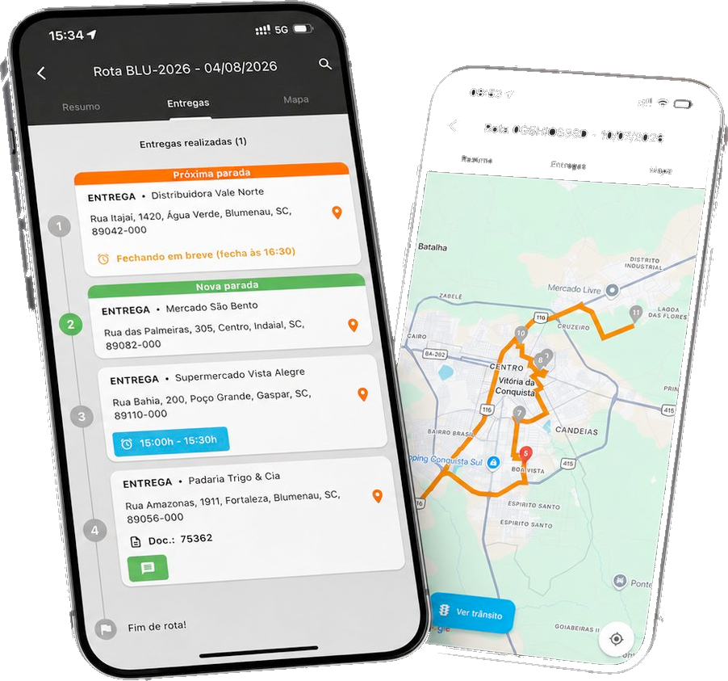

Quando o cliente ligar, a resposta já está na tela.
Hoje a pergunta "cadê meu pedido?" passa pelo comercial, pela expedição e só então chega ao motorista. Com a Grafos, quem atende o cliente abre o painel e vê onde está a entrega, o que já foi entregue e o comprovante de cada parada.


Cada parada atualizada na hora, sem ninguém precisar ligar.
- O status de cada parada muda conforme o motorista avança no app.
- Sequência prevista contra a realizada, e quilometragem planejada contra a rodada.
- Aviso quando a entrega passa do tempo médio daquele cliente ou quando o veículo para fora da rota.
- Quem atende o cliente busca pela nota, CNPJ ou nome e responde sozinho, sem ligar para a expedição.

Chega de procurar canhoto em pasta e celular.
Antes, o motorista tirava foto do canhoto, alguém guardava em algum lugar e, na hora de procurar, ninguém achava. Pior: qualquer foto servia, até a de um poste. Na Grafos, cada entrega guarda cinco evidências:
- Foto do canhoto tirada na hora pelo app, sem acesso à galeria.
- Localização de onde a entrega foi feita.
- Data e hora.
- Quem recebeu, com nome e documento.
- O número da nota fiscal.
Quando o financeiro precisar de um canhoto ou o cliente disser que não recebeu, a prova está a uma busca de distância.
O que vem junto.
Devoluções com motivo
Entrega parcial ou devolvida, item por item, com o motivo registrado. A mercadoria que volta não passa mais despercebida.
Etiquetas QR Code
O motorista confere cada volume com a leitura do código.
Recebimento via Pix
Pagamento na entrega, que só confirma quando o dinheiro cai.
Link de rastreio
O cliente recebe um link para acompanhar a entrega e se prepara para receber.
“Tivemos um enorme avanço na nossa operação de logística, com dados precisos, acompanhamento em tempo real e muitos outros benefícios.”
Perguntas sobre a gestão de entregas
O comprovante digital substitui o canhoto de papel?
No controle da operação, sim. Cada entrega guarda a foto do canhoto tirada na hora, o local, a data e a hora, quem recebeu e o número da nota. Tudo fica guardado para consulta e prestação de contas.
O cliente final é avisado da entrega?
Sim. Dá para avisar o destinatário de que a entrega está a caminho, o que evita tentativa frustrada.
Consigo ver o histórico de uma entrega específica?
Sim. Cada entrega guarda horário, status, comprovante e ocorrências.
E se o motorista ficar sem internet?
O app funciona offline, em Android e iPhone. As entregas registradas sem sinal sobem para o sistema assim que a conexão volta.
Quem do meu time usa o painel?
Normalmente a logística e a expedição, que acompanham as rotas, e o gerente, que tira os dados da operação. Quem precisa responder o cliente, como o comercial, também consulta por ali.
Pare de ligar para saber onde está a entrega.
Na demonstração, a gente mostra o acompanhamento e o comprovante digital funcionando na prática.
Agendar demonstração